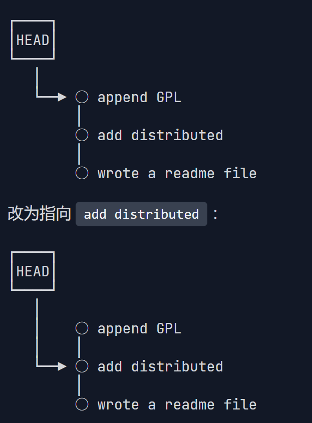
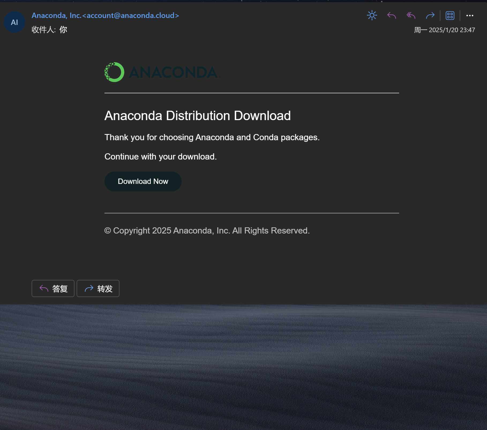
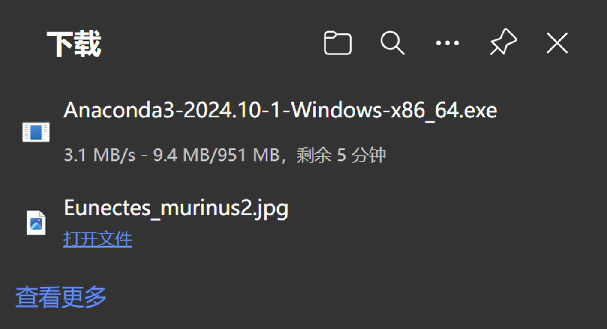
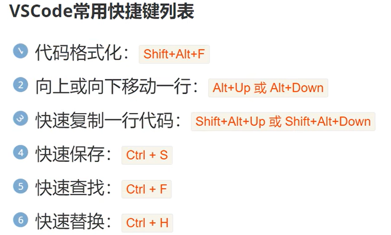
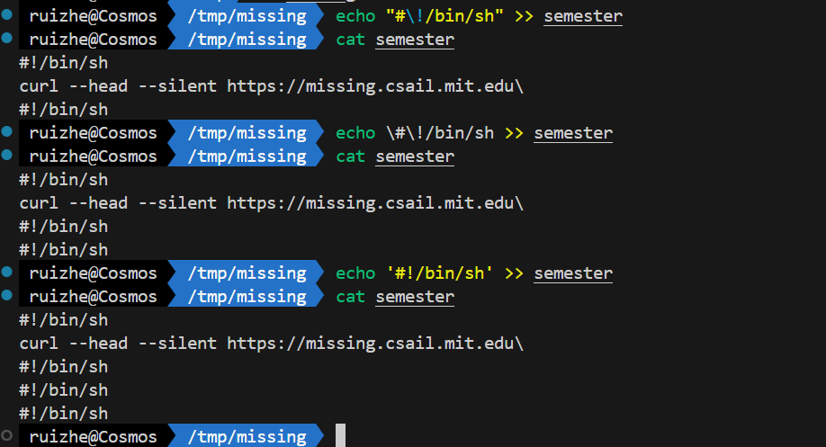

from MIT Missing Semester of Your CS Education
Actually, there is one thing that I don't understand, it is why do you quit listening to missing semester and search for a domestic class which waste your whole afternoon and from which you learn NOTHING.
Ridiculous!!!
Absurd!!!
It make sence that you need to ask ChatGPT, but what can't be understood is that you turn to a domestic class!
shell的工作原理by ChatGPT
Shell 是操作系统的命令行界面（CLI）程序，它充当用户与操作系统内核之间的中介，接受用户输入的命令并将其传递给内核进行处理。Shell 不仅提供一个交互式的命令执行环境，还能执行脚本，进行自动化操作。它在系统中运行并处理输入输出，控制进程、文件以及程序流。理解 Shell 的工作原理有助于更好地使用它进行任务自动化、调试和系统管理。
下面详细讲解 Shell 的工作原理。
1. Shell 启动过程
当你打开一个终端或控制台时，Shell 程序会启动并等待你输入命令。Shell 启动的过程一般分为以下几步：
- 启动：
-
当你打开终端，或者在启动时启动某个 Shell 程序时，操作系统会根据默认配置（如
/etc/passwd中的SHELL设置）启动一个特定的 Shell 程序，常见的是bash（Bourne Again Shell）。 -
读取配置文件：
- Shell 启动时，会加载一些配置文件，这些文件设置了环境变量、别名、函数等。
-
对于交互式 Shell，通常会读取以下文件：
- 全局配置：
/etc/profile、/etc/bash.bashrc（系统范围内的配置） - 用户配置：
~/.bash_profile、~/.bashrc（用户自定义的配置）
- 全局配置：
-
初始化环境：
- 配置文件中的环境变量会被加载，定义如
PATH、USER、HOME等环境变量。 - 此时，Shell 为会话准备好输入输出流（标准输入
stdin、标准输出stdout、标准错误stderr）。
2. Shell 的工作原理
Shell 通过对用户输入的命令进行解析、执行，并返回输出结果的方式与操作系统进行交互。其主要工作原理包括命令解释、进程管理、文件操作、脚本执行等。
命令解释与执行
当用户在 Shell 中输入命令时，Shell 执行以下步骤：
- 命令输入：
-
用户在 Shell 中输入命令。例如，输入
ls -l /home。 -
命令解析：
-
Shell 将输入的命令分解成各个部分。通过空格或其他分隔符，Shell 会把输入命令分解为命令名、参数、选项等。
- 示例输入
ls -l /home，Shell 将其分解为： ls：命令名（程序）-l：选项/home：参数
- 示例输入
-
命令查找：
- Shell 会检查命令是否是内建命令（如
cd,echo,exit等）。如果是内建命令，Shell 会直接在自身中处理。 -
如果是外部命令（如
ls,grep,python等），Shell 会根据$PATH环境变量搜索命令所在的路径。 -
创建进程：
-
如果命令是外部命令，Shell 使用
fork()系统调用创建一个新的进程，子进程会运行该命令。fork()：创建一个子进程，子进程会从父进程复制一份自己的内存。exec()：子进程调用exec()系列系统调用加载命令的可执行文件，执行命令。
-
命令执行：
-
子进程执行命令，并向标准输出（
stdout）输出结果。对于错误输出，系统会写入标准错误流（stderr）。 -
返回结果：
- 命令执行完毕后，子进程会将其退出状态返回给父进程（Shell）。如果命令成功执行，退出状态为 0；如果失败，退出状态为非零值。
- Shell 将命令的输出结果显示给用户，并将错误信息输出到标准错误。
进程管理
Shell 不仅能够执行命令，还能够管理和控制进程。它通过以下方式进行进程管理：
- 后台和前台进程：
- 默认情况下，Shell 在前台执行命令。你可以使用
&将命令放到后台执行：command & -
背景进程会在后台运行，Shell 会显示进程 ID（PID）。你可以通过
jobs查看后台进程，并使用fg或bg将其带回前台或继续后台执行。 -
进程间通信（IPC）：
- Shell 使用管道（
|）和重定向（>，<）来实现进程间通信和数据流转。 -
管道将一个命令的输出作为下一个命令的输入，实质上是通过内存缓冲区进行数据传输。例如：
ls | grep "txt" -
信号管理：
-
Shell 可以发送和接收信号，用于进程控制。例如，
Ctrl+C发送一个SIGINT信号，终止正在执行的进程；Ctrl+Z发送SIGTSTP信号，暂停进程。 -
作业控制：
- Shell 提供了作业控制功能，允许用户暂停、继续、停止进程，管理多个进程的运行。
- 命令如
jobs、fg、bg、kill用于管理进程。
3. Shell 脚本的工作原理
Shell 不仅能够执行单个命令，还可以执行由多个命令组成的脚本。脚本通常是包含多个命令的文本文件，Shell 会逐行读取并执行这些命令。
脚本执行流程
- 脚本创建：
-
创建脚本文件并编辑，脚本的第一行通常会包含一个 shebang（
#!）来指定解释器。例如：#!/bin/bash echo "Hello, World!" -
脚本权限：
-
脚本需要具有执行权限。使用
chmod为脚本赋予执行权限：chmod +x script.sh -
脚本执行：
-
运行脚本时，Shell 会按顺序读取文件中的每一行，逐行执行命令。每个命令都会按照前述的流程解析、查找、执行。
-
变量与函数：
-
脚本支持使用变量、控制结构（如
if,for,while等）和函数，以实现更复杂的任务。 -
错误处理与调试：
- 在执行脚本时，Shell 会根据命令的退出状态来判断是否继续执行。使用
set -e可让脚本在命令失败时停止执行。 - 可以使用
echo输出调试信息，或使用trap捕获错误信号。
4. 输入输出流与重定向
Shell 提供了强大的输入输出管理功能，允许用户将命令的输入输出进行重定向。
- 标准流：
-
标准输入（stdin）、标准输出（stdout）和标准错误（stderr）是 Shell 与外部交互的主要方式。
-
重定向：
- 输入重定向（
<）：将文件内容作为命令的输入。 - 输出重定向（
>或>>）：将命令输出写入文件。 -
错误重定向（
2>）：将错误信息输出到文件。 -
管道：
- 管道（
|）将一个命令的输出传递给下一个命令作为输入。
5. 内建命令与外部命令
Shell 有两类命令：内建命令和外部命令。
- 内建命令：
-
Shell 自带的命令，由 Shell 自身执行。常见的内建命令有
cd（切换目录）、echo（输出文本）、exit（退出 Shell）等。 -
外部命令：
- 外部命令是操作系统中的程序（如
ls、grep、cat）。Shell 查找这些命令的可执行文件，创建子进程执行。
总结
Shell 的工作原理可以分为多个阶段：用户输入命令、Shell 解析命令、查找和执行命令、进程管理、输出结果。它不仅是命令行工具，还可以通过脚本编程自动化任务，进行进程间通信，处理输入输出流，进行错误处理等。Shell 是与操作系统交互的重要桥梁，理解其工作原理能帮助我们更高效地操作系统、管理进程、自动化任务。
-
terminal: 呈现shell的地方
-
bash: the most widely used shell on linux
-
prompt: 命令提示符，就这个东西
{kind=link}
在命令提示符后面，你输入的是：程序名称 + 参数
And, use spaces to seprate the arguments, and if your need to include space in one argument, use \ before the space or "" or ''.
date
echo hello\ world
mkdir "my photes" # the right way
mkdir my photos # you might create 2 directory(my and photos)
# 其中：echo and date and mkdir 是程序名称，后面的是参数，即这里shell执行的就是带参数的程序
<div markdown="1" style="margin-top: -30px; font-size: 0.75em; opacity: 0.7;">
:material-circle-edit-outline: 约 10025 个字 :fontawesome-solid-code: 346 行代码 :material-image-multiple-outline: 10 张图片 :material-clock-time-two-outline: 预计阅读时间 38 分钟
</div>
enviroment variable¶
How does the shell know what to do when you type the "echo" or somethong else?
环境变量：设置好的，shell启动时就会自动设置的东西，bash下环境变量其实就是一个编程语言，So, in fact, we can run not only the program with arguments, but also things in programming language, like defining functions, while loops and so on, which is called shell scripting(编写shell脚本)
有很多环境变量，查看环境变量：
echo $PATH # show all the path, shell就是在这些里面搜索程序的；被冒号分隔；PATH储存系统的查找路径
echo $HOME # HOME储存home目录
echo $SHELL # SHELL储存当前系统默认的shell
which <程序名称>
# 查看我输入这个程序名称后运行的是哪个程序
简单文件操作¶
首先解释一下路径的概念：
win: 由“\”开始(win的根目录为\)，且每个分区（驱动器）都有一个根目录("\"), 例如C:\
linux/macos: 由“/”开始(其根目录为/),且所有都在一个根目录下
绝对路径：能完全确定文件位置的完整路径
相对路径：相当于你当前处于的路径来说
例如，用cd改变路径就可以相对 or 绝对路径 
{kind=link}
pwd # 打印当前所处绝对路径
cd # 改变路径
# 几个特殊的目录：
. 当前的目录
.. 父目录
.. # 可回到父目录
../../ or ../.. # 回到上上级目录，etc.
~ 代表home/ruizhe
cd - # 切换回上一次所在的目录
ls <目录名> # 可以列出ls后面的参数（目录）下的文件
# 例如：
ls ..
| 区别点 | 标志（Flags） | 选项（Options） |
|---|---|---|
| 格式 | 通常是 -f 或 --flag |
通常是 -o value 或 --option=value |
| 参数 | 通常不需要额外的值 | 通常需要指定一个值 |
| 功能 | 控制简单开关功能 | 提供更详细的设置 |
| 组合性 | 可以组合，例如 -abc |
不能组合，需单独指定 |
查看详细用法：
ls --help
ls -l # 列出文件的详细信息
detailed info by ChatGPT
执行 ls -l 命令后，会以长格式列出目录或文件的详细信息。每一行代表一个文件或目录，输出内容分为以下几个字段（从左到右）：
1. 文件类型与权限
-rw-r--r--
-：普通文件（regular file）
- d：目录（directory）
- l：符号链接（symbolic link）
- b：块设备文件（block device）
- c：字符设备文件（character device）
- p：命名管道（pipe）
- s：套接字（socket）
- 接下来的9位：文件权限，分为三组，每组三位，分别表示所有者、所在组、其他用户的权限：
- r（read）：可读
- w（write）：可写
- x（execute）：可执行
- 如果没有权限，用
-表示。
对文件：r/w/x代表字面含义
对文件夹： r代表：可以查看该目录下的文件列表（是否被允许列出该文件夹的所有文件列表； w代表：可以在该目录中重命名、创建、删除文件。如果对一个文件有w而对其目录没有w则不能删除文件（因为删除文件得需要对目录有w）； x代表：有cd入该目录的权限，如果想对该目录下的文件进行r、w、x，必须得拥有该目录及其所有父目录的x权限。
示例：
-rw-r--r-- # 表示：普通文件，所有者有读写权限，组和其他用户仅有读权限。
drwxr-xr-x # 表示：目录，所有者有读、写、执行权限，组和其他用户有读和执行权限。
2. 链接数
2
. 和 ..）。
3. 所有者（User）
user
4. 所属组（Group）
group
5. 文件大小
4096
- 对于目录，显示的是目录元数据占用的大小，而非其内容大小。
- 如果需要更直观的显示大小，可以使用
-h（human-readable）选项：ls -lh
6. 修改时间
2024-11-18 10:30
年月日 时:分。- 如果文件的修改时间超过半年，则显示年份而不是时间。
7. 文件名
example.txt
mylink -> /path/to/target
完整示例
执行 ls -l 输出如下：
-rw-r--r-- 1 user group 1024 2024-11-18 10:30 example.txt
drwxr-xr-x 2 user group 4096 2024-11-18 10:00 my_directory
逐字段解释：
1. -rw-r--r--：普通文件，所有者有读写权限，组和其他用户仅有读权限。
2. drwxr-xr-x：目录，所有者有读、写、执行权限，组和其他用户有读和执行权限。
3. 1 和 2：硬链接数量。
4. user：所有者名称。
5. group：所属组名称。
6. 1024 和 4096：文件或目录大小（字节数）。
7. 时间：最后修改时间。
8. example.txt 和 my_directory：文件名或目录名。
常见扩展选项
- -h：以易读格式显示文件大小。
- -a：显示所有文件，包括隐藏文件（以 . 开头）。
- -t：按修改时间排序。
- -S：按文件大小排序。
综合使用这些选项可以更方便地查看文件信息。
mv full_path/old_file_name full_/new_file_name # 重命名文件,这里可以是相对路径也可以是绝对路径,无法在一个目录下操作另一个目录下的文件所以要给出目录
mv file_name directory # 移动文件
cp full_path/file_name full_path(new)/file_name(can_be_new) # 在full_path(new)中复制一份名为file_name(can_be_new)的文件，注意这里可以是相对路径也可以是绝对路径
rm dir/file_name # 也要提供文件路径（相对or绝对）
rm -r # 递归删除目录及其包含的所有文件
rmdir # 删除目录，但是只能删除空目录
mkdir
cat
man <程序名> # 手册页
Ctrl + L == clear
真正有用的文件操作 —— 流¶
流 —— shell真正的强大之处 输入流：默认从键盘输入终端terminal的
输出流：默认处输出到terminal
重定向 >, <, >>¶
重定向输入流输出流：
< full_path/file_name # 将前面程序的输入重定向到这个文件
> full_path/file_name # 将前面程序的输出重定向到这个文件
# for example，
echo hello world > hello.txt # 在当前目录下创建一个hello.txt并在其中写入hello world，如果原来有内容将会覆盖原来的。且这里可以两个单词之间用空格；
echo hello world ohh >> hello.txt # 继续写入，不会覆盖原有的
cat # 可以将输入输出连在一起：默认情况下将输入内容复制到输出端
# example：
cat < hello.txt # shell会打开文件hello.txt，从其中读取输入，并将其设置为cat的命令，输出，默认道terminal
cat < hello.txt > hello2.txt # 其实是告诉shell使用hello.txt作为cat命令的输出，再将cat打印的内容写入hello2.txt
管道 |¶
作用：将左边程序的输出作为右边程序的输入
注意：左右两个程序互相不知道，只是|将其输入输出连接
tail -nk # 最后k行（其中n为标志，k为你输入的一个常数代表最后k行
# 等价于：
tail --line=k
for example，
ls -l | tail -n2 # 将ls -l的输出即文件详细列表作为tail -n2的输入，用tail命令处理输入得到最后两行，由于没有重定向，则输出内容打印到terminal
ls -l | tail -n2 > ls.txt # 加了一个重定向，则输出内容打印到ls.txt
root¶
超级用户（可以做任何事情，访问任何文件） ，像win的管理员用户
一般不用
使用： sudo（即do as su）以超级用户的身份执行操作
语法： sudo + 程序名 + ……
场景： sys文件夹：其实不是你计算机上的文件，里面是计算机的内核参数，由于是文件，所以可以用文件操作命令来访问他们；一般没有权限访问，访问需要sudo
例如brightness调节
可能的方案：
sudo echo 500 > brightness # permission denied
即：shell以ruizhe身份想要打开brightness并将echo的500写入其中，这是没有权限的
再例，ls -l | tail -n2, ls不知道tail，tail不知道ls。而是我告诉shell，shell进行/处理pipe & redirection。
解决方案1：
sudo su # 改变成：shell以root身份运行，而不是ruizhe
$代表以用户ruizhe访问文件
#代表以root访问文件

{kind=link}
解决方案2：
echo 1060 | sudo tee brightness
# 含义：我告诉终端运行sudo 1060，然后告诉他运行sudo tee brightness(即run tee as root)，并让他将echo的输出发送到sudo tee；
# tee命令：读取输入，将其输入到文件中，同时将他就输出到标准输出。
# echo <num> | sudo tee <file_name> or echo <sum> > file_name
打开文件
xdg-open <file_name> # 用特定软件打开文件，只用于linux
工具和脚本¶
语法¶
文件顶部写：#!/usr/bin/zsh指定解释器
示例：
#!/bin/zsh
# 判断是否是素数的函数
is_prime() {
local num=$1
if (( num <= 1 )); then
echo "$num is not a prime number."
return 1
fi
# 循环检查是否有其他因数
for (( i = 2; i * i <= num; i++ )); do
if (( num % i == 0 )); then
echo "$num is not a prime number."
return 1
fi
done
echo "$num is a prime number."
}
# 主程序
echo "Enter a number to check if it is prime:"
read number
# 调用函数进行判断
is_prime $number
关键字¶
-
$0: 当前正在执行的脚本的名称在交互式 Shell 中： $0 显示当前的 Shell 名称，比如 zsh、bash。
在脚本中： $0 显示脚本名称或调用脚本时的路径。
被别的脚本调用时： $0 的值会显示调用脚本时的路径。
-
$1~$9: shell 脚本接收的1~9第个参数：strin:name=$1 channel=$2 echo "hi $name, welcome to $channel"zsh file_name zhangrz "Growing Cosmos"stdout:
hi zhangrz, welcome to Growing Cosmos -
$?: 可以在脚本行中直接写，作用是获取上一个命令的错误代码true echo $? # stdout: 0 false echo $? # stdout: 1 -
$_: 获取上一个命令的最后一个参数 -
!!: 被替换为上一次的命令用处：创建一个东西没有足够权限时
mkdir /mnt/new # stdout: permission denied sudo !! # !!会被替换为 mkdir /mnt/new，就行了 -
$(command)将command命令的输出作为这个表达式的值进程替换echo "we are in $(pwd)" # stdout: we are in the_current_dir # 注意只有双引号括住才能将$(pwd)替换，单引号不行 -
command <(command option) <(command option): 内部执行前面的，将输出放到一个临时文件，在将文件的标识符提供给最左边的命令作用：用于命令不是从strin输入的，而是从文件中获取的，可以连接文件
例如：
diff <(ls foo) <(ls bar): 在两个ls的输出间比较
- 类型转换convert
convert image.{png,jpg}: 将png转换为jpg且保留更多图片参数
- 扩展
{}touch project{1,2}/src/test/test{1,2,3}.py: 创建了6个文件
touch {foo,bar}/{a..j}: 创建fooa到fooj和bara到barj
-
shebang: 告诉用什么解释器，如果不知道具体路径：
#!usr/bin/env python3调用env方法 -
语法检查：
shellcheck file_name -
命令语法查询：
man command_name: 冗长tldr command_name: 绝佳
运算符¶
-
逻辑运算符
{kind=link}
{kind=link}
1. 控制流关键字 用于条件判断、分支控制和循环的关键字。
- 条件判断相关：
if：条件判断语句的开始。- 语法：例：
if [ $num -lt 2 ] - 要求：中括号中间前后都有空格
- 语法：例：
then：与if配合，表示条件为真时执行。else：与if配合，表示条件为假时执行。elif：多个条件分支。-
fi：结束if条件块。 -
循环相关：
for：循环语句，用于遍历。- 语法：例
in：与for配合，指定循环的列表。while：循环语句，用于条件为真时执行。until：循环语句，用于条件为假时执行。do：循环体开始标记。-
done：结束循环体。 -
条件测试：
case：多分支选择语句。esac：结束case语句。
2. 函数定义关键字
- function：用于定义函数（在某些 Shell 中可以省略）。
- { 和 }：函数体的开始和结束标记。
3. 变量和环境相关关键字
- export：将变量导出为环境变量。
- readonly：声明变量为只读。
- declare：声明变量（仅 Bash 支持）。
- local：在函数内部声明局部变量。
- unset：删除变量或函数。
4. 输入输出和错误处理关键字
- read：从标准输入读取用户输入。
- echo：向标准输出打印信息。
- return：从函数中返回。
- exit：退出当前 Shell 或脚本，并返回退出码。
5. 作业控制关键字
- wait：等待后台任务完成。
- break：跳出循环。
- continue：跳过当前循环的剩余部分，继续下一次循环。
- trap：捕获信号并执行指定命令。
6. Shell 特定的保留字
这些是 Shell 的保留字，专用于特定语法功能：
- [[ 和 ]]：扩展条件测试的关键字（Bash 特有）。
- !：逻辑非，用于条件取反。
- .（点命令）：执行脚本文件的内容，相当于 source。
- :：空操作，始终返回成功。
- set：设置 Shell 的行为选项。
- shift：操作脚本中的位置参数。
- eval：将参数作为命令执行。
- exec：替换当前 Shell 的执行内容。
7. 异常处理关键字
- try/catch：在某些扩展中支持异常处理（例如 Zsh）。
- || 和 &&：逻辑短路操作，用于执行条件命令链。
8. 其他关键字
- select：用于生成菜单选项的关键字。
- time：测量命令执行时间。
注意
- Zsh 与 Bash 的差异：
Zsh 和 Bash 的关键字几乎一致，但 Zsh 支持一些额外的扩展（如异常处理相关的 try/catch）。
- 查看关键字的方法：
在 Bash 或 Zsh 中可以用以下命令列出所有保留关键字：
help
compgen -k # 列出所有关键字
1. 算术运算符
Shell 默认不支持直接的算术运算，可以使用 (( )) 或 $(( )) 进行整数运算。
| 运算符 | 描述 | 示例 | 结果 |
|---|---|---|---|
+ |
加法 | echo $((5 + 3)) |
8 |
- |
减法 | echo $((5 - 3)) |
2 |
* |
乘法 | echo $((5 * 3)) |
15 |
/ |
除法（整数） | echo $((5 / 3)) |
1 |
% |
取余 | echo $((5 % 3)) |
2 |
** |
幂运算 | echo $((2 ** 3)) |
8 |
2. 关系运算符
用于比较两个值，通常和条件判断语句（if、[[ 等）一起使用。
| 运算符 | 描述 | 示例 | 结果 |
|---|---|---|---|
-eq |
是否等于（equal） | [ 5 -eq 5 ] |
true |
-ne |
是否不等于（not equal） | [ 5 -ne 3 ] |
true |
-gt |
是否大于（greater） | [ 5 -gt 3 ] |
true |
-lt |
是否小于（less） | [ 5 -lt 3 ] |
false |
-ge |
是否大于等于 | [ 5 -ge 5 ] |
true |
-le |
是否小于等于 | [ 5 -le 5 ] |
true |
3. 字符串运算符 用于操作和比较字符串。
| 运算符 | 描述 | 示例 | 结果 |
|---|---|---|---|
= |
字符串是否相等 | [ "abc" = "abc" ] |
true |
!= |
字符串是否不相等 | [ "abc" != "def" ] |
true |
< |
字符串比较，按字典顺序小于 | [ "abc" \< "def" ] |
true |
> |
字符串比较，按字典顺序大于 | [ "abc" \> "def" ] |
false |
-z |
字符串是否为空（长度为 0） | [ -z "" ] |
true |
-n |
字符串是否非空（长度大于 0） | [ -n "abc" ] |
true |
注意：
<和>需要转义，避免被 Shell 解释为重定向符号。
4. 逻辑运算符 用于连接多个条件。
| 运算符 | 描述 | 示例 | 结果 |
|---|---|---|---|
&& |
逻辑与（and） | [ 5 -gt 3 ] && [ 3 -gt 1 ] |
true |
|| |
逻辑或（or） | [ 5 -lt 3 ] || [ 3 -gt 1 ] |
true |
! |
逻辑非（not） | [ ! 5 -lt 3 ] |
true |
5. 文件测试运算符 用于判断文件类型和属性。
| 运算符 | 描述 | 示例 | 结果 |
|---|---|---|---|
-e |
文件是否存在 | [ -e file.txt ] |
true/false |
-f |
是否为普通文件 | [ -f file.txt ] |
true/false |
-d |
是否为目录 | [ -d /path/to/dir ] |
true/false |
-r |
文件是否可读 | [ -r file.txt ] |
true/false |
-w |
文件是否可写 | [ -w file.txt ] |
true/false |
-x |
文件是否可执行 | [ -x file.sh ] |
true/false |
-s |
文件是否非空 | [ -s file.txt ] |
true/false |
6. 条件测试扩展（[[ 和 ]]）
[[ 是 Shell 的扩展条件测试工具，比 [ 更强大。
| 运算符 | 描述 | 示例 | 结果 |
|---|---|---|---|
-eq |
等于 | [[ 5 -eq 5 ]] |
true |
&& |
逻辑与 | [[ 5 -gt 3 && 3 -gt 1 ]] |
true |
|| |
逻辑或 | [[ 5 -lt 3 || 3 -gt 1 ]] |
true |
=~ |
正则匹配 | [[ "abc" =~ ^a.* ]] |
true |
7. 位运算符
适用于整数位操作，使用 $(( ))。
| 运算符 | 描述 | 示例 | 结果 |
|---|---|---|---|
& |
按位与 | echo $((5 & 3)) |
1 |
| |
按位或 | echo $((5 | 3)) |
7 |
^ |
按位异或 | echo $((5 ^ 3)) |
6 |
~ |
按位取反 | echo $((~5)) |
-6 |
<< |
左移 | echo $((5 << 1)) |
10 |
>> |
右移 | echo $((5 >> 1)) |
2 |
8. 赋值运算符
| 运算符 | 描述 | 示例 | 结果 |
|--------|----------------|-----------------------------|--------------|
| = | 简单赋值 | a=5 | 设置 a=5 |
| += | 加法赋值 | a=$((a + 5)) | 累加 |
| -= | 减法赋值 | a=$((a - 5)) | 减少 |
| 变量 | 说明 | 示例 |
|---|---|---|
$0 |
当前脚本的名称或命令的名称。 | ./script.sh（执行脚本时输出脚本名称） |
$1, $2, ... |
脚本的第 1、2、... 个位置参数（即传递给脚本的参数）。 | ./script.sh arg1 arg2 => $1=arg1, $2=arg2 |
$# |
脚本或函数传递的参数个数（不包括脚本名称）。 | ./script.sh arg1 arg2 => $#=2 |
$@ |
所有位置参数，作为一个整体处理。通常在需要将所有参数传递给其他命令时使用。 | ./script.sh arg1 arg2 => $@="arg1 arg2" |
$* |
所有位置参数，作为一个整体处理，与 $@ 类似，但处理方式不同，特别是在带引号时。 |
./script.sh arg1 arg2 => $*="arg1 arg2" |
$$ |
当前脚本或命令的进程 ID（PID）。 | echo $$（输出当前 Shell 的进程 ID） |
$! |
最近一次后台命令的进程 ID。 | sleep 10 & echo $!（输出 sleep 命令的进程 ID） |
$? |
上一个命令的退出状态码。0 表示成功，非零表示失败。 | ./script.sh（执行后 echo $? 输出脚本的退出状态） |
$_ |
代表or可代替上一个命令的最后一个参数 | cd .. cd $_第二个命令即cd .. |
$- |
当前 Shell 使用的选项。 | echo $-（输出当前 Shell 启动时的选项，如 -i 表示交互模式） |
$HOME |
当前用户的 home 目录。 | echo $HOME（输出当前用户的 home 目录） |
$PATH |
系统环境变量，列出用于查找可执行命令的路径。 | echo $PATH（输出系统命令查找路径） |
$USER |
当前用户的用户名。 | echo $USER（输出当前用户的用户名） |
$PWD |
当前工作目录。 | echo $PWD（输出当前工作目录） |
$OLDPWD |
上一次工作目录（通过 cd 命令切换的目录）。 |
cd /tmp; cd /; echo $OLDPWD（输出上一次的工作目录） |
$IFS |
输入字段分隔符（Internal Field Separator），用来分隔命令的输入。默认值为空格、制表符和换行符。 | echo $IFS（输出当前输入字段分隔符的值） |
$RANDOM |
返回一个介于 0 和 32767 之间的随机数。 | echo $RANDOM（输出一个随机数） |
$SECONDS |
从脚本开始执行以来的秒数。 | echo $SECONDS（输出脚本运行的秒数） |
$LINENO |
当前执行的代码行号。 | echo $LINENO（输出当前行号） |
$FUNCNAME |
当前执行的函数名称。 | echo $FUNCNAME（输出当前函数名） |
$BASH_VERSION |
如果使用 bash，则输出当前 bash 的版本。 |
echo $BASH_VERSION（输出 bash 版本信息） |
说明
- 位置参数（$1, $2, ...）：是传递给脚本或函数的命令行参数。你可以在运行脚本时提供这些参数，并在脚本中访问它们。
$@和$*：它们都表示所有的位置参数，$@会将每个参数作为单独的项处理，而$*会将所有参数合并成一个单一的字符串。它们在处理包含空格的参数时行为有所不同。$$和$!：$$是当前脚本或命令的进程 ID，而$!是最后一个后台命令的进程 ID。$?：用于获取上一个命令的退出状态码，通常用于错误处理或判断某个命令是否成功执行。- 环境变量：如
$HOME,$USER,$PATH等，提供了系统的一些有用信息。
变量定义¶
-
方法1：shell会话中定义（普通）
注意！不能有空格！shell中空格是用来分隔参数的 
-
方法2：shell会话中定义再在脚本文件中引用 示例：  注意加上
export：将变量转换为环境变量，且该环境变量只在当前会话中有效，exit命令退出后该shell会话即失效使环境变量永久有效的方法：放到~/.zshrc中：
code ~/.zshrc export variable_name=value # 之后，用这两个命令重新加载.zhrc使环境变量生效 ..zshrc # or exit -
方法3：脚本文件中直接定义 变量默认是全局变量，如果需要在函数内部定义局部变量，则需要加上
local关键字 ??? info "$的用法by ChatGPT在 Zsh 或其他大多数 Unix Shell 中，
$是用来引用变量的符号。它的作用是让 Shell 解析变量的值，而不是直接输出变量名本身。
$的作用- 引用变量值
-
当一个变量被定义后，使用
$可以获取它的值。a=4 # 定义变量 a 并赋值为 4 echo $a # 输出变量 a 的值，结果是 4 -
与普通字符串的区别
echo a会直接输出字母a，因为没有$，Shell 会将a视为普通文本。-
echo $a则会输出变量a的值。如果a未定义，输出会是空白。 -
引用环境变量
-
Shell 中的环境变量也可以通过
$引用，例如：echo $PATH # 输出 PATH 环境变量的值 echo $HOME # 输出当前用户的主目录路径 -
特殊变量引用
$还可以引用一些特殊的 Shell 变量，比如：echo $$ # 当前 Shell 的进程 ID echo $? # 上一个命令的返回值 echo $# # 脚本中传递的参数数量
总结：
$是用来引用变量值的关键符号-
定义变量时不用加
$：a=4 # 这里不能写成 $a=4 -
使用变量值时必须加
$：echo $a # 输出 4
如果
$后面引用的变量未定义或为空，Shell 不会报错，但会返回空字符串。例如：unset a # 删除变量 a echo $a # 输出空
{kind=link}
{kind=link}
字符串¶
有空格，需要引号括住，单引号双引号大多数情况是等效的
不等效的情况：
foo=bar
echo 'value is $foo.' # stdout: value is $foo. 单引号不会替换
echo "value is $foo." # stdout: value is bar. 双引号会替换
定义函数¶
写入：
- 方法1：直接在shell中写入语句，即可自动执行
- 方法2(better)：创建.sh文件在其中写，再用source file_name.sh执行该文件, 再函数名 实参执行函数
- 方法3：chmod +x file_name.sh以添加x权限
- 方法4：zsh file_name.sh
脚本的执行
source 命令和给脚本文件添加执行权限 (chmod +x) 是两种完全不同的方式来运行脚本，它们的行为、作用范围、以及适用场景各有不同。以下是两者的详细比较以及使用建议：
1. source 命令
source 是 Shell 内置命令，用来在当前 Shell 会话中执行脚本文件的内容，而不创建新的子进程。
特性 - 运行方式：在当前 Shell 会话中执行脚本。 - 变量作用域：脚本中的变量会直接影响当前 Shell 环境，例如修改环境变量、定义函数等。 - 用途：适合需要加载配置或临时修改当前 Shell 环境的场景。
典型用法 1. 加载配置文件：
source ~/.zshrc
.zshrc 配置，而无需关闭并重启 Shell。
-
脚本中定义的函数或变量保留在当前环境：
运行：# test.sh VAR="Hello, World!" func() { echo "Inside function" }source test.sh echo $VAR # 输出 "Hello, World!" func # 调用函数，输出 "Inside function" -
不需要执行权限：
source只需要读取权限 (r)，不需要添加执行权限。
适用场景 - 修改或加载当前 Shell 环境（如设置环境变量、别名、函数）。 - 需要共享脚本中定义的变量、函数到当前 Shell 会话。
2. 添加执行权限并运行脚本 (chmod +x)
通过 chmod +x 给脚本赋予执行权限，然后以 ./script.sh 的形式运行。
特性 - 运行方式：创建一个新的子 Shell，会话独立。 - 变量作用域：脚本中的变量和当前 Shell 会话的变量隔离，执行完毕后变量不会影响当前环境。 - 用途：适合执行独立任务或脚本。
典型用法 1. 给脚本添加执行权限：
chmod +x script.sh
./script.sh
-
指定解释器： 脚本的第一行通常包含 Shebang (
#!) 指定解释器，例如：运行方式：#!/bin/bash echo "Hello from Bash!"./script.sh -
需要执行权限：
chmod +x必须被赋予执行权限后，才能直接运行。
适用场景 - 独立运行脚本，不需要影响当前 Shell 环境。 - 长时间运行或作为后台任务。 - 分发或共享脚本供其他用户使用。
两者的主要区别
| 特性 | source |
chmod +x 和执行脚本 |
|---|---|---|
| 作用范围 | 当前 Shell | 新的子 Shell |
| 对环境的影响 | 修改当前 Shell 环境变量 | 不影响当前 Shell 环境 |
| 执行权限需求 | 不需要 | 需要添加执行权限 |
| 用途 | 加载配置文件或修改当前环境 | 执行独立任务或作为可执行程序运行 |
| Shebang 支持 | 忽略脚本中的 Shebang | 使用 Shebang 指定的解释器运行 |
使用建议
- 使用
source的场景： - 加载配置文件（如
.zshrc、.bashrc等）。 -
定义全局函数或变量，直接影响当前 Shell 环境。
-
使用
chmod +x并运行的场景： - 编写独立脚本以完成某些任务，且脚本不需要修改当前 Shell 环境。
- 分发脚本给其他用户，作为一个完整的工具运行。
简单总结：
- 需要共享变量/函数到当前 Shell 会话：用 source。
- 脚本独立执行，不影响当前 Shell 环境：用 chmod +x。
如果还有不清楚的地方，随时问我！ 😊
{kind=link}
其他¶
shuf -i m-n -n k：在m-n中生成k个随机数
注意：当想将一个命令的输出结果赋值给一个变量：需要命令替换语法，即反引号` `, 即`the command` or $+(), 即$(the command)。建议用$+()。
查找¶
- 通配符* : 代替一段
- 通配符? : 代替一个字符
- 查找文件：
find
| 操作 | 命令 | 说明 |
|---|---|---|
| 查找指定文件名 | find /path -name "filename" |
查找指定目录下文件名为 filename 的文件 |
| 查找指定后缀文件 | find /path -name "*.txt" |
查找目录下所有 .txt 文件 |
| 按文件大小查找 | find /path -size +1M |
查找大于 1MB 的文件 |
| 按修改时间查找 | find /path -mtime -7 |
查找 7 天内修改过的文件 |
| 按文件类型查找 | find /path -type d |
查找目录 (d) 或普通文件 (f) |
| 查找后执行操作 | find /path -name "*.log" -exec rm {} \; |
找到 .log 文件后删除它 |
实例：
# 在当前目录及子目录中查找所有包含 "example" 的文件
find . -name "*example*"
# 查找最近 3 天内创建的 .txt 文件
find /home/user -name "*.txt" -ctime -3
# 查找大于 10MB 的日志文件并删除
find /var/log -name "*.log" -size +10M -exec rm {} \;
find . -name AI -type d # 查找当前目录下名字是AI，类型是dir地文件夹：被查找对象可以不直接在.的子目录下，例如本次输出：./docs/CS/AI
find . -path '**/test/*.py' -type f
- 查找内容：
grep
| 操作 | 命令 | 说明 |
|---|---|---|
| 简单内容查找 | grep "pattern" file |
在文件中查找包含 pattern 的行 |
| 递归查找 | grep -r "pattern" /path |
在目录及子目录中递归查找包含 pattern 的文件内容 |
| 忽略大小写 | grep -i "pattern" file |
查找时忽略大小写 |
| 显示行号 | grep -n "pattern" file |
输出匹配内容所在的行号 |
| 显示上下文 | grep -C 2 "pattern" file |
显示匹配行以及上下 2 行 |
| 使用正则表达式 | grep -E "pattern" file |
支持扩展正则表达式 |
实例：
# 查找文件 "log.txt" 中包含字符串 "ERROR" 的行
grep "ERROR" log.txt
# 忽略大小写查找并显示行号
grep -ni "error" log.txt
# 在目录 /var/log 下递归查找包含 "fail" 的所有文件
grep -r "fail" /var/log
# 查找带数字的行（正则匹配）
grep -E "[0-9]+" file.txt
- 查找命令路径：
which和whereis
| 操作 | 命令 | 说明 |
|---|---|---|
| 查找命令的可执行路径 | which command |
输出命令的绝对路径 |
| 查找命令的文件及手册路径 | whereis command |
显示命令的二进制、源文件和手册路径 |
实例：
# 查找 ls 命令的路径
which ls
# 输出：/bin/ls
# 查找 git 命令的相关文件
whereis git
# 输出：git: /usr/bin/git /usr/share/doc/git
- 查找网络相关内容：
netstat,lsof,ss
| 操作 | 命令 | 说明 |
|---|---|---|
| 查找端口占用 | netstat -tuln | grep "80" |
查找当前监听的 TCP/UDP 端口 |
| 查找进程使用的网络连接 | lsof -i :port |
查看指定端口被哪个进程占用 |
| 查看所有网络连接 | ss -tuln |
显示所有网络连接状态 |
实例：
# 查找 80 端口占用
netstat -tuln | grep ":80"
# 查看哪个程序占用了 443 端口
sudo lsof -i :443
# 使用 ss 查看当前所有监听的网络端口
ss -tuln
- 查找磁盘空间：
du和df
| 操作 | 命令 | 说明 |
|---|---|---|
| 查看文件/目录大小 | du -sh /path |
查看目录或文件的总大小 |
| 查看磁盘使用情况 | df -h |
查看分区磁盘使用情况 |
实例：
# 查看 /home 目录的大小
du -sh /home
# 查看挂载点的磁盘使用情况
df -h
- 查找历史命令：
history
| 操作 | 命令 | 说明 |
|---|---|---|
| 查找执行过的命令 | history |
显示所有历史命令 |
| 搜索指定的历史命令 | history | grep "pattern" |
按关键字搜索历史命令 |
实例：
# 查找最近执行过的包含 "ls" 的命令
history | grep "ls"
# 清空历史命令
history -c
- 替换文件内容：
sed
| 操作 | 命令 | 说明 |
|---|---|---|
| 替换文件中匹配的内容 | sed 's/pattern/replacement/' file |
替换文件中的第一处匹配 |
| 全局替换 | sed 's/pattern/replacement/g' file |
替换文件中所有匹配 |
| 替换后保存至新文件 | sed 's/pattern/replacement/g' file > new_file |
替换结果输出到新文件 |
实例：
# 将 file.txt 中所有 "hello" 替换为 "world"
sed 's/hello/world/g' file.txt
# 替换后保存至新文件 output.txt
sed 's/hello/world/g' file.txt > output.txt
杂项¶
-
WSL: Windows Subsystem for Linux，即 Windows 下的 Linux 子系统。
方面 Linux WSL 底层架构 运行在 Linux 内核上，是一个独立的操作系统。 运行在 Windows 内核上，基于翻译或虚拟化实现。 内核支持 使用真正的 Linux 内核。 - WSL 1：无 Linux 内核，仅模拟系统调用。
- WSL 2：使用完整的 Linux 内核。文件系统 默认使用 Linux 文件系统（如 ext4）。 默认通过虚拟磁盘支持 ext4，同时可以访问 NTFS 文件。 硬件访问 直接访问硬件资源（如设备、网络）。 通过 Windows 层间接访问硬件，限制对设备的直接控制。 性能 直接运行在裸机上，性能最佳。 WSL 1：性能有限，尤其是文件 I/O。
WSL 2：性能接近 Linux，但仍稍逊色于原生。软件兼容性 完全支持 Linux 应用程序和工具。 - WSL 1：部分应用不兼容，特别是需要完整内核功能的应用。
- WSL 2：大部分应用兼容。GUI 支持 原生支持 GUI 应用程序（如 GNOME、KDE）。 通过 WSLg 支持部分 Linux GUI 应用程序（仅 WSL 2）。 使用场景 专为服务器、桌面和嵌入式设备设计。 适合开发者在 Windows 环境下运行 Linux 工具链。 -
Quoting Actually, you can simply use escape character like this. 
-
文件x权限相关
linux执行文件的命令
在 Linux 中，执行文件的命令取决于文件的类型（可执行文件、脚本等）和文件的权限设置。以下是几种常见的执行文件的方法：
1. 执行可执行文件 对于已经编译好的二进制可执行文件，可以直接在终端中执行。假设文件是
./program，你可以使用以下命令：./program注意事项： - 使用
./表示当前目录。如果文件不在PATH环境变量指定的目录中，必须使用./指定当前目录。 - 如果文件没有执行权限，系统会提示Permission denied错误。可以使用chmod添加执行权限：chmod +x program2. 执行脚本文件 对于脚本文件（如 Shell 脚本、Python 脚本等），你也可以通过以下命令执行它们：
a. 执行 Bash 脚本 假设脚本文件是
./script.sh，你可以使用以下命令：./script.sh如果没有执行权限，你可以使用
chmod +x来添加执行权限：chmod +x script.shb. 执行 Python 脚本 对于 Python 脚本文件，你可以使用 Python 解释器来执行。例如，假设脚本是
./script.py：python script.py或者，如果脚本有执行权限，并且在第一行包含正确的 shebang（
#!/usr/bin/python），你也可以直接运行：./script.py注意： 在运行 Python 脚本时，你可能需要指定 Python 版本，尤其是 Python 2 和 Python 3 之间的区别。例如：
python3 script.pyc. 执行其他类型的脚本 对于其他类型的脚本（例如 Perl、Ruby 等），你可以指定相应的解释器运行它们：
-
Perl 脚本：
perl script.pl -
Ruby 脚本：
ruby script.rb
3. 使用
sh或bash执行脚本 如果你不想直接运行脚本文件，也可以通过sh或bash来执行它。例如：sh script.sh或者：
bash script.sh4. 执行已安装的程序（通过 PATH） 如果文件已经安装并且位于环境变量
$PATH中，你可以直接输入文件名来执行。例如，ls、git等命令可以直接运行，因为它们在$PATH中。git --version ls -l总结 - 对于可执行文件，使用
./<filename>来执行（确保文件有执行权限）。 - 对于脚本文件，确保文件有执行权限（chmod +x <script>），然后使用./script.sh或相关解释器（python script.py）来执行。 - 如果文件在$PATH中，直接输入文件名即可执行。 在 Linux 中，当你想要执行一个文件时，./是用来指定当前目录的路径。通常，./是必要的，因为当前目录（.）并不自动包含在环境变量$PATH中，$PATH变量是告诉系统在哪些目录中查找可执行文件的。如果你直接输入文件名，Linux 会在$PATH中指定的目录中查找该命令，而不会自动查找当前目录。1.
$PATH环境变量的作用$PATH环境变量告诉 shell 在哪些目录中查找命令。通常，它包含一些系统目录（如/usr/bin、/bin、/usr/local/bin等），但是当前目录（.）并不包含在内。当你在终端中输入一个命令时，Shell 会按顺序在
$PATH指定的目录中查找该命令。如果命令不在这些目录中，Shell 就不会执行它。2. 为什么当前目录不在
$PATH中 将当前目录（.）加入到$PATH中存在一定的安全风险。假设当前目录在$PATH中，如果你在当前目录下无意中创建了一个与系统命令同名的文件（例如ls），Shell 就可能会执行这个恶意文件，而不是系统中的ls命令。这可能导致系统安全问题。3. 使用
./明确指定当前目录 为了防止误用，Linux 默认不将当前目录 (.) 包括在$PATH中。如果你希望执行当前目录下的文件，就需要通过./来明确指定当前目录。例如，如果当前目录中有一个名为
program的可执行文件，运行时需要这样输入：./program这样，Shell 就知道你要执行的是当前目录下的
program文件，而不是在$PATH中的任何其他程序。4. 如果不加
./会发生什么？ 如果你直接输入program（没有加./），Shell 会在$PATH中查找名为program的可执行文件。如果该文件不在$PATH中，Shell 会显示类似于以下的错误：bash: program: command not found5. 安全性考虑 如果允许直接执行当前目录下的文件（不加
./），可能会导致以下安全隐患： - 无意间执行恶意脚本或程序（例如，某些脚本或程序可能被误放入当前目录）。 - 执行与系统命令同名的恶意文件（例如，如果某个文件叫ls，你可能会执行错误的程序）。6. 如何改变行为（不推荐） 如果你非常确信自己不想经历
./，并且愿意承担风险，可以将当前目录添加到$PATH中。你可以在.bashrc或.zshrc等配置文件中添加以下行：export PATH=".:$PATH"这样，你的当前目录就会被包括在
$PATH中，从而允许你直接执行当前目录下的文件。然而，这样做是不推荐的，尤其是在生产环境中，因为它会带来潜在的安全问题。
总结 -
./是用来明确告诉 Shell 当前目录的路径，因为当前目录 (.) 默认不在$PATH中。 - 这样做是出于安全考虑，防止你无意间执行当前目录下的恶意或不安全的文件。 -
-
.sh文件及其权限 所有新创建的文件都默认只有rw权限，需要
chmod +x file_name.sh才可以./file_name.h -
什么是脚本？
脚本script by ChatGPT
脚本（Script） 是一种包含一系列命令的文件，这些命令按照一定的顺序执行。脚本通常是用来自动化任务的，通过运行脚本，可以省去手动输入一系列命令的麻烦。
在 Linux 和类 Unix 系统中，脚本通常是用一些解释型语言编写的，比如 Shell（Bash）、Python、Perl 等。脚本文件通常是文本文件，包含了要执行的命令或指令。
常见脚本类型： 1. Shell 脚本（.sh）： - Shell 脚本是最常见的一种脚本，通常使用 Bash 或其他 shell（如 Zsh、Fish 等）来编写。Shell 脚本通常包含一系列 Shell 命令，可以自动化文件操作、系统管理、程序启动等任务。 - 示例：
#!/bin/bash echo "Hello, World!"- Python 脚本（.py）：
- Python 是一种广泛使用的编程语言，也可以编写脚本。Python 脚本通常用于更复杂的任务，比如处理数据、构建网络应用、操作文件等。
-
示例：
print("Hello, World!") -
Perl 脚本（.pl）：
- Perl 脚本常用于文本处理、报告生成、Web 开发等。
-
示例：
print "Hello, World!\n"; -
Ruby 脚本（.rb）：
- Ruby 也是一种编程语言，可以用来编写脚本，通常用于 Web 开发和系统管理任务。
脚本的用途： - 自动化：你可以编写脚本来自动化重复的任务，如备份文件、系统监控、批量处理等。 - 简化操作：复杂的命令序列可以被写入脚本文件，通过一次执行来完成。 - 任务调度：脚本可以与任务调度工具（如
cron）结合使用，在预定的时间或周期性地执行某些任务。脚本的特点： 1. 可执行：脚本文件是可执行的，文件的执行通常需要先赋予执行权限（
chmod +x）。 2. 解释执行：脚本是由解释器逐行执行的，而不是像编译程序那样先编译成机器码后执行。 3. 文本文件：脚本文件通常是纯文本文件，可以用文本编辑器（如 Vim、Nano、VSCode）进行编辑。如何运行脚本： - 在 Linux 上，你可以通过命令行运行 Shell 脚本：
或者：./script.shbash script.sh总之，脚本是用于自动化执行命令的文件，帮助简化系统操作、程序执行和任务调度等日常工作。
-
有关脚本的解释器
解释器 by ChatGPT
#!/usr/bin/中的#!是 shebang（也叫 hashbang 或 bang line）符号，它是用来告诉操作系统该脚本应该由哪个解释器来执行的特殊字符序列。#!/usr/bin/后面的路径（如/usr/bin/python3、/bin/bash等）指定了该脚本应该使用的解释器。详细解释：
#!的含义：#!是一种特殊的字符序列，它并不属于普通的注释语法，而是操作系统用来识别脚本类型的标记。- 在 Unix-like 系统（如 Linux 和 macOS）中，
#!是 shebang，表示该文件是一个脚本文件，后面跟着一个解释器的路径。 -
操作系统读取文件时，遇到
#!会知道该文件应该用后面指定的程序（解释器）来执行，而不是依赖于当前的 shell 或其他默认设置。 -
/usr/bin/的含义： /usr/bin/是文件系统中的一个标准目录，通常包含了大多数用户可用的命令和可执行文件。它是 Linux 系统中存放系统二进制可执行文件的一个常见位置。-
当你在 shebang 中看到
/usr/bin/，后面通常跟着解释器程序的名称，例如/usr/bin/python3或/usr/bin/bash，表示该脚本应由/usr/bin/目录中的 Python 3 解释器或 Bash 解释器来执行。 -
完整的 shebang 示例：
-
Python 脚本：
这个脚本告诉操作系统用#!/usr/bin/python3 print("Hello, World!")/usr/bin/python3解释器来执行 Python 代码。当你运行脚本时，系统会自动调用 Python 3 解释器来执行脚本中的代码。 -
Bash 脚本：
这个脚本告诉操作系统用#!/bin/bash echo "Hello, World!"/bin/bash解释器来执行 shell 脚本。 -
作用：
- 指定解释器：
#!后面的路径告诉操作系统使用哪个解释器来执行脚本。例如，#!/usr/bin/python3会让系统使用 Python 3 来执行脚本；#!/bin/bash会使用 Bash 解释器来执行 shell 脚本。 - 使脚本直接可执行： 当你在脚本的第一行使用 shebang 并给文件赋予执行权限后，你可以直接执行脚本，而不需要手动指定解释器。例如：
如果没有 shebang 行，你就需要显式地使用解释器：
chmod +x myscript.py ./myscript.pypython3 myscript.py
为什么使用 shebang？ 1. 便捷性： 使用 shebang 可以让你直接通过
./script_name运行脚本，而无需指定解释器（例如python3 script.py或bash script.sh）。-
兼容性： Shebang 允许脚本在不同的环境中正确运行，尤其是在不同系统上。例如，在某些系统中，
/usr/bin/python可能指向 Python 2，而/usr/bin/python3指向 Python 3。使用正确的 shebang 行确保脚本会使用正确的版本。 -
明确性： Shebang 使脚本文件变得自解释，即使不查看文件的内容，用户也可以知道该脚本需要哪个解释器。
总结： -
#!（shebang）：这是一个特殊的标记，告诉操作系统用哪个解释器来执行脚本。 -/usr/bin/：这是文件系统中常见的存放可执行文件的目录，通常是操作系统查找解释器的位置之一。 - 在 shebang 后面指定的路径（如/usr/bin/python3或/bin/bash）告诉操作系统该脚本由哪个解释器来运行，从而使得脚本更加灵活和自包含。
{kind=link}
{kind=link}
正则表达式
正则表达式（Regular Expression）
正则表达式是一种文本模式匹配的工具，广泛用于字符串搜索、替换和验证操作。它由普通字符和特殊字符（称为元字符）组成，能够构建复杂的匹配规则。
基础语法
| 符号 | 说明 | 示例 | 匹配结果 |
|---|---|---|---|
. |
匹配任意单个字符（除换行符） | a.b |
匹配 a 和 b 中间任意字符：acb |
* |
匹配前一个字符 0 次或多次 | ab* |
匹配 a、ab、abb 等 |
+ |
匹配前一个字符 1 次或多次 | ab+ |
匹配 ab、abb 等（不包括 a） |
? |
匹配前一个字符 0 次或 1 次 | ab? |
匹配 a 或 ab |
{n} |
匹配前一个字符 n 次 | a{3} |
匹配 aaa |
{n,} |
匹配前一个字符至少 n 次 | a{2,} |
匹配 aa、aaa、aaaa 等 |
{n,m} |
匹配前一个字符 n 至 m 次 | a{2,4} |
匹配 aa、aaa 或 aaaa |
| |
逻辑“或”，匹配左右任意表达式 | a|b |
匹配 a 或 b |
[] |
匹配方括号中任意字符 | [abc] |
匹配 a、b 或 c |
[^] |
匹配不在方括号中的任意字符 | [^abc] |
匹配除 a、b、c 外的字符 |
() |
分组，用于提取或组合子表达式 | (abc)+ |
匹配 abc、abcabc 等 |
特殊字符
| 字符 | 含义 | 示例 | 匹配结果 |
|---|---|---|---|
\d |
匹配任意数字（等价于 [0-9]） |
\d+ |
匹配 123、456 等 |
\D |
匹配非数字字符（等价于 [^0-9]） |
\D+ |
匹配 abc、@# 等 |
\w |
匹配任意单词字符（等价于 [a-zA-Z0-9_]） |
\w+ |
匹配 hello、123_abc 等 |
\W |
匹配非单词字符（等价于 [^a-zA-Z0-9_]） |
\W+ |
匹配 #@! 等 |
\s |
匹配空白字符（空格、制表符等） | \s+ |
匹配空格或换行 |
\S |
匹配非空白字符 | \S+ |
匹配 hello 等 |
^ |
匹配行首 | ^a |
匹配以 a 开头的字符串 |
$ |
匹配行尾 | b$ |
匹配以 b 结尾的字符串 |
\ |
转义字符，用于转义特殊字符 | \. |
匹配 . 本身 |
常见示例
-
匹配邮箱地址：
匹配[a-zA-Z0-9._%+-]+@[a-zA-Z0-9.-]+\.[a-zA-Z]{2,}example@mail.com。 -
匹配手机号码（以 1 开头的 11 位数字）：
匹配^1\d{10}$13812345678。 -
匹配 IP 地址：
匹配\b((25[0-5]|2[0-4][0-9]|[01]?[0-9][0-9]?)\.){3}(25[0-5]|2[0-4][0-9]|[01]?[0-9][0-9]?)\b192.168.1.1。 -
匹配日期（YYYY-MM-DD 格式）：
匹配\d{4}-\d{2}-\d{2}2023-11-23。
常用工具支持
- 命令行工具:
grep,sed,awk - 编程语言: Python (
re模块), JavaScript (RegExp对象), Java (Pattern类) - 在线测试工具: regex101
正则表达式强大但复杂，可以从简单的规则开始尝试，逐步掌握更高级的用法！ 🚀
words
argument: 参数
variable: 变量
prompt: 命令提示符